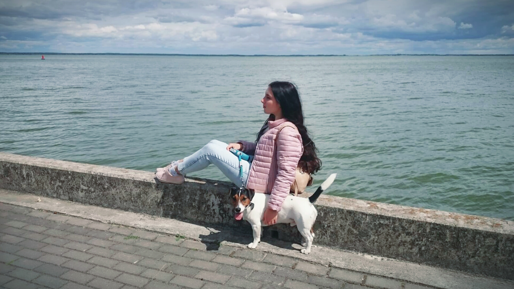
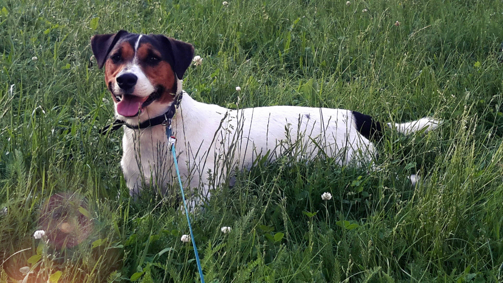

How to Get a New Bestie?
Home page
Before Getting a Dog
Adaptation
Pieces of Advice
Some pieces of advice how to improve friendship with your dog:

1.
There is no need to show the dog brute force.
Be affectionate and never forget to cheer!
2.
Long walks in nature (in the woods or in the park) combined with games
are a great strengthening of your friendship. Be attentive and remember what places your pet likes. Also, practice games that your dog is particularly responsive to.
3.
Take your dog to the pet store
and give him a few minutes to explore all the options and choose the toy he likes best. He will be grateful for this opportunity.
4.
Keep calm
. If you start yelling or throwing something, your dog will get scared of you and may think that he cannot fully trust you. Dogs are very smart. They will understand that they have upset you and will feel guilty even if you don’t scream and lose your temper.

Click here
to go to the home page and read my personal story